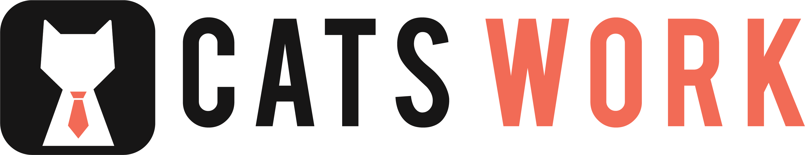

Catswork Lead Designer
Worked on UIUX development of Chrome Extension, Dashboard and Website of Catswork.

ALEXISLIU
Catswork Lead Designer
Worked on UIUX development of Chrome Extension, Dashboard and Website of Catswork.
A student start-up focused on providing end-to-end recruitment resources that are affordable, quality, and curated for Northwestern students.
Sept 2018 to now
Lead Designer (UIUX and Graphics)